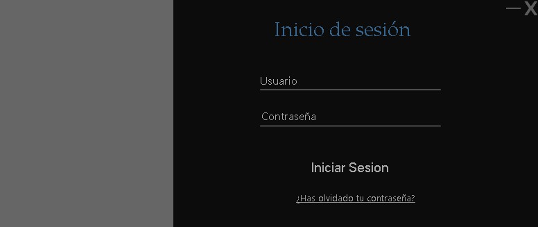
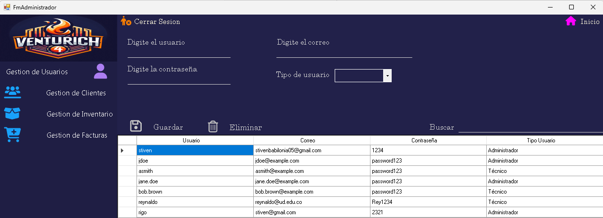
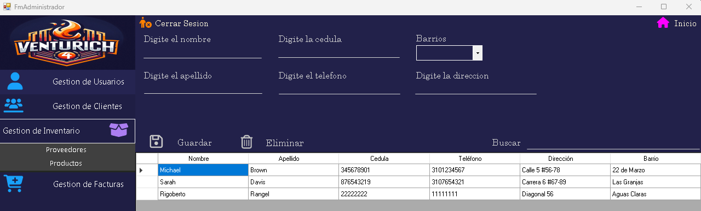
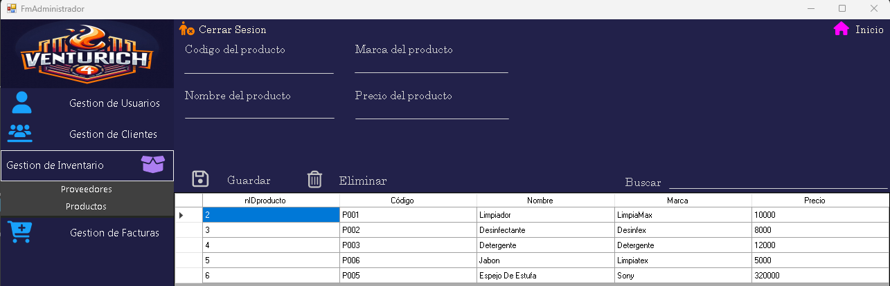
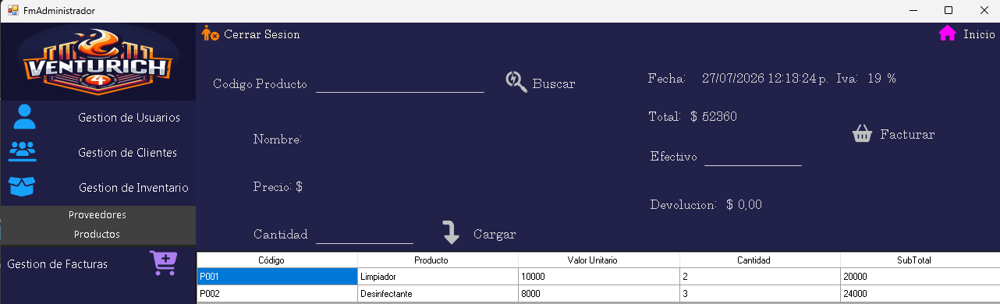

Módulos Desarrollados Del Sistema POS
(Punto de Venta)
Aplicación de escritorio desarrollada en C#, Forms y MySQL, diseñada para optimizar la administración de una empresa mediante módulos especializados para la gestión de usuarios, clientes, inventario y facturación. El sistema implementa autenticación por roles, operaciones CRUD e integración con una base de datos relacional para garantizar la organización y seguridad de la información.

Módulo de Inicio de sesión
El sistema cuenta con un módulo de autenticación que valida las credenciales del usuario antes de permitir el acceso a la aplicación. Dependiendo del rol asignado en la base de datos, el sistema redirige automáticamente al panel correspondiente.

Módulo de Usuarios
Permite administrar las cuentas de acceso al sistema, facilitando el registro y control de los usuarios que utilizarán la aplicación.

Módulo de Clientes
Módulo encargado de almacenar y administrar la información de los clientes, facilitando su consulta durante el proceso de facturación.

Módulo de Gestion de inventario(Proveedores)
Permite administrar la información de los proveedores encargados del suministro de productos para la empresa.

Módulo de Gestion de inventario(Productos)
Controla el catálogo de productos disponibles en el inventario, permitiendo mantener actualizada la información comercial de cada artículo.

Módulo de Facturación
Este módulo permite realizar el proceso completo de facturación de ventas, calculando automáticamente los valores correspondientes, generando el detalle de la compra y las facturas en pdf.